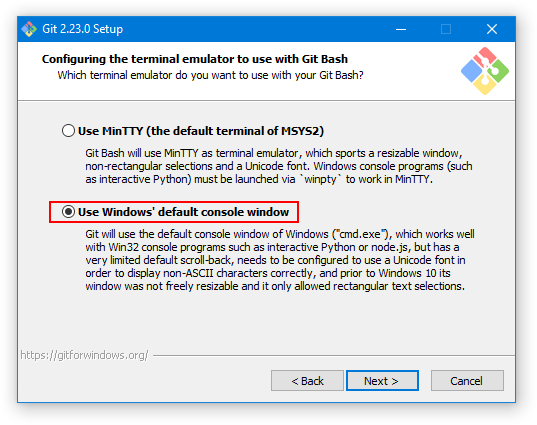

Lab 0: Getting Started (Windows Setup)
Setup
Terminal
PowerShell:
The terminal is a program that allows you to interact with your computer by entering commands.
You already have a program called Windows PowerShell. Open that up and you should be good to go! Simple commands like cd and ls will work (python will work after the setup).
[OPTIONAL ALTERNATIVE] Git Bash:
You can also try and download a terminal called Git Bash, which has a bit more utilities than PowerShell and may be required for future courses.
You should be able to install Git Bash with most of the default configuration options, with one exception. In the Configuring the terminal emulator to use with Git Bash step, select the second option: Use Windows' default console window.
This is very important! If you do not select this option, your Git Bash terminal will not work!

Python
Python 3 is the primary programming language used in this course. If you have an older version of Python installed,
please make sure to download and install Python 3.9. You can check your Python
version with python3 ––version.
If you'll be using PowerShell, open the Microsoft Store and search for "Python." Install Python 3.9 by the Python Software Foundation (this should be the first result).
Verify: We can use the terminal to check if your Python interpreter was installed correctly. Try the following command:
python3If the installation worked, you should see some text printed out about the
interpreter followed by >>> on its own line. This is where you can type in Python
code. Try typing some expressions you saw in lecture, or just play around to see
what happens! You can type exit() or Ctrl-Z and press enter to return to your command line.
If thepython3command doesn't work, try usingpythonorpy.
Text Editor
The Python interpreter that you just installed allows you to run Python code. You will also need a text editor, where you will write Python code.
Visual Studio Code (VS Code) is the most popular choice among the staff for this course for writing Python. After installing it, you may find our Visual Studio Code helpful.
We highly recommend using VS Code for this class. This will help us support you best since most of staff uses VS Code. Please do not use word processors such as Microsoft Word to edit programs. Word processors can add extra content to documents that will confuse the interpreter.
You can open a terminal directly on VS Code. Thus, when running terminal commands, you can manage everything in VS Code rather than navigating back and forth between VS Code and a separate
terminal application. You can open an embedded terminal by going to
Terminal > New Terminal in VS Code's navigation bar.
Other Text Editors
For your reference, we've written some guides on other popular text editors:
A few other editors:
- PyCharm: A desktop editor designed for Python.
- Sublime Text: A text editor that works with code.
Pair Programming
Throughout this course, you'll have many chances to collaboratively code in labs and projects. We recommend you download these pair programming extensions now to use in the future.
For sharing code, you can follow the instructions for your editor of choice:
Walkthroughs & Reviews
Walkthrough: Using the Terminal
First, open a Powershell/Bash window.
Home Directory
When you first open your terminal, you will start in the "home directory."
Path
A PATH is like an address: it tells both you and the computer the full path (or route) to a certain folder. Remember that you can access the files and directories (folders) on your computer in two different ways. You can either use the terminal (which is a command line interface or CLI) or you can use Finder. Finder is an example of a graphics user interface (or GUI). The techniques for navigating are different, but the files are the same. For example, here's how my folder for CS 61A looks in my GUI:

And here's how the exact same folder looks in terminal:

The PATH (C:\Users\adity\Desktop\berk\courses\61a) can be found to the left of the search bar in the GUI, and next to PS in PowerShell
The contents of the "61a" folder can be found listed in the GUI, and underneath the yellow ls command in PowerShell
Terminal vs Python Interpreter
Let's pause and think about the difference between the terminal and the Python interpreter.

- Which is the terminal?
- Which one is the Python interpreter?
- Which one is my code editor?
- And how can you tell?
Both A and D are my terminal. This is where you can run bash commands like cd and ls. D is the terminal that is built-in to VS Code.
B is the Python interpreter. You can tell because of the >>> prompt that means you've started a Python interpreter. You can also tell because the command that started it is visible: python3. The python3 command launches a Python interpreter. If you type a bash command into the Python interpreter, you'll probably get a syntax error! Here's an example:

C is my code editor. This is where I can write Python code to be executed via my terminal.
Walkthrough: Organizing your Files
In this section, you will learn how to manage files using terminal commands.
Make sure your prompt does not begin with
>>>. If it begins with>>>you are still in a Python shell, and you need to exit. See above for how.
Directories
The first command you'll use is ls. Try typing it in your terminal:
lsThe ls command lists all the files and folders in the current
directory. A directory is another name for a folder (such as the
Documents folder).
Since you're in the home directory right now, after you type ls you should
see the contents of your home directory.
Changing Directories
To move into another directory, use the cd command (change directory).
Let's try moving into your Desktop directory. First, make sure you're in your
home directory (cd ~) and use ls to see if the Desktop directory is present.
Try typing the following command into your terminal, which should move you into that directory:
cd DesktopMaking New Directories
The next command is called mkdir, which makes a new
directory. Let's make a directory called cs61a in your Desktop directory to
store all of the assignments for this class:
mkdir cs61aA folder named cs61a will appear on your Desktop. You can verify this by
using the ls command again or by checking your Desktop using File Explorer.
At this point, let's create some more directories. First, make sure you are in
the cs61a directory, path should be C:\Users\<USER>\Desktop\cs61a, with the path before \Desktop\cs61a potentially being different.
Then, create two new folders, one called projects and the other called lab. Both
should be inside of your cs61a folder:
cd ~\Desktop\berk
mkdir projects
mkdir labNow if you list the contents of the directory (using ls), you'll see two
folders, projects and lab.
More Directory Changing
cd ..(two dots). The..means "the parent directory", or one directory above your current directory.
You do not have to keep your files on your Desktop if you prefer otherwise. Where you keep your files locally will not affect your grade. Do whatever is easiest and most convenient for you!
Downloading the Assignment
If you haven't already, download the zip archive, lab00.zip, which
contains all the files that you'll need for this lab. On most computers, lab00.zip is probably located in a
directory called Downloads in your home directory.
You must expand the zip archive before you can work on the lab files. You need to first click on the .zip file, then choose "Extract all". If you run into trouble, you can search online for how to unzip a file. Different operating systems and different browsers have different ways of unzipping.
You only need to unzip the files once.
Once you unzip lab00.zip, you'll have a new folder called lab00 which
contains the following files (check it out with cd lab00 and ls):
lab00.py: The template file you'll be adding your code took: A program used to test and submit assignmentslab00.ok: A configuration file forok
Summary
Here is a summary of the commands we just went over for your reference:
ls: lists all files in the current directorycd <path to directory>: change into the specified directory
Finally, you're ready to start editing the lab files! Don't worry if this seems complicated—it will get much easier over time. Just keep practicing! You can also take a look at our UNIX tutorial for a more detailed explanation of terminal commands.